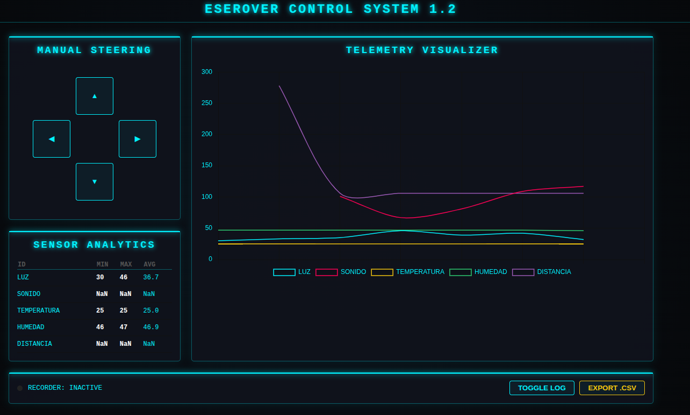

Los paneles o dashboards son interfaces dónde realizar publicaciones y/o subscricciones de forma gráfica y sencilla. Diagmos que son un panel de control remoto de nuestro sistema.
Pará dispositivos móviles
Las dos aplicaciones que hemos encontrado de cierta calidad son estas.
Paneles webs
También podemos realizar páginas webs en forma de paneles o dashborads para mandar topics y valores o para recibir topics y valores del robot. En concreto esta ha sido realizada a través de Gemini usando el siguiente prompt, y algunas mejoras posteriores:
Quiero hacer una página web que controle un robot a través de mqtt con un servidor o broker mqtt. La IP pública del servidor es mqtt-dashboard.com, sin usuario. El servidor responde a través del puerto wss 8884. En la web debe aparecer cuatro botones para publicar topics de movimiento del robot: botón adelante con topic movimiento valor adelante, botón atras con topic movimiento valor atras, botón derecha con topic movimiento valor derecha, botón izquierda con topic movimiento valor izquierda. Además deben representarse en tiempo real las gráficas de los sensores a la que la web está suscrito, en un sólo interfaz de gráficas. Los topics de las gráficas son: luz (topic sensores/luz), sonido (topic sensores/sonido), temperatura (topic sensores/temperatura), humedad (topic sensores/humedad) y distancia (topic sensores/distancia). Además debe tener un botón para guardado de datos en formato csv, y alguna animación que indique que está grabando datos.
Para descargar la web haga clic con botón derecho sobre ella.

Vídeo demostración del sistema funcionando a través de panel web:
Paneles de control en python
Con la ayuda de la IA, en concreto chat-GPT junto con el editor de python thonny se ha realizado el siguiente panel, que consta de dos ventanas una con el control de movimiento del robot y el guardado de datos de los sensores, y la segunda con el graficado de los datos de los sensores en tiempo real.
 |
 |
Para conseguir este panel debemos abrir el fichero del programa en python (.py) y abrirlo en el editor de python Thonny, una vez abierto el fichero en Thonny debemos cambiar la ip del broker (servidor), instalar las librerías paho-mqtt y matplotlib, y ejecutar el programa.